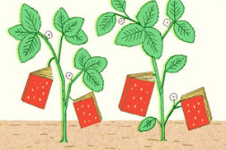

-
LATEST TWEET
Join the Conversation -
LET'S BE FRIENDS!
For weekly finds, community recommendations, and more, like us on Facebook.Join the Community
Read, Learn, Share
Get daily how-tos,stoies & updates with the latest news.
Photo by Clare Barboza-
Tastemakers
Feast your eye & get recipes! -
Blog
News,how-tos,stoies,and more -
The A-List
Handpicked,absolute favorites -
Contribute
We want hear from you
Sign up for our newsletter to receive a handpicked selection of the best stories,recipes,and news,delivered weekly to your inbox.
-

2012's Best Summer Cookbooks
With the best of the season coming from "orchards,farm and gardens",NPR has put together an impressive collection of 10 summer cookbooks.
May 23, 2012 / Read >>
-

How to Make Vegetable Chips
About a month ago, I ate almost an entire box of kale chips. My brother and I were visiting our consin in Brooklyn, and before a very thoughtfully prepared vegan...
May 17, 2012 / Read >>
-

Join us on Pinterest
If I could curate a cookbook for you, this would be it.
May 16, 2012 / Read >>
-

Recipes from a Sunday Supper
I could not figure out what to do with the delectable slices of Pear Cake that I brought home from this wonderful Sunday supper-eat them slowly, a little bit at...
May 15, 2012 / Read >>